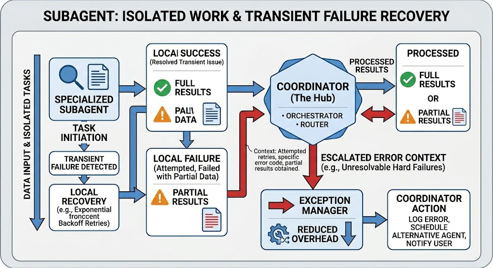
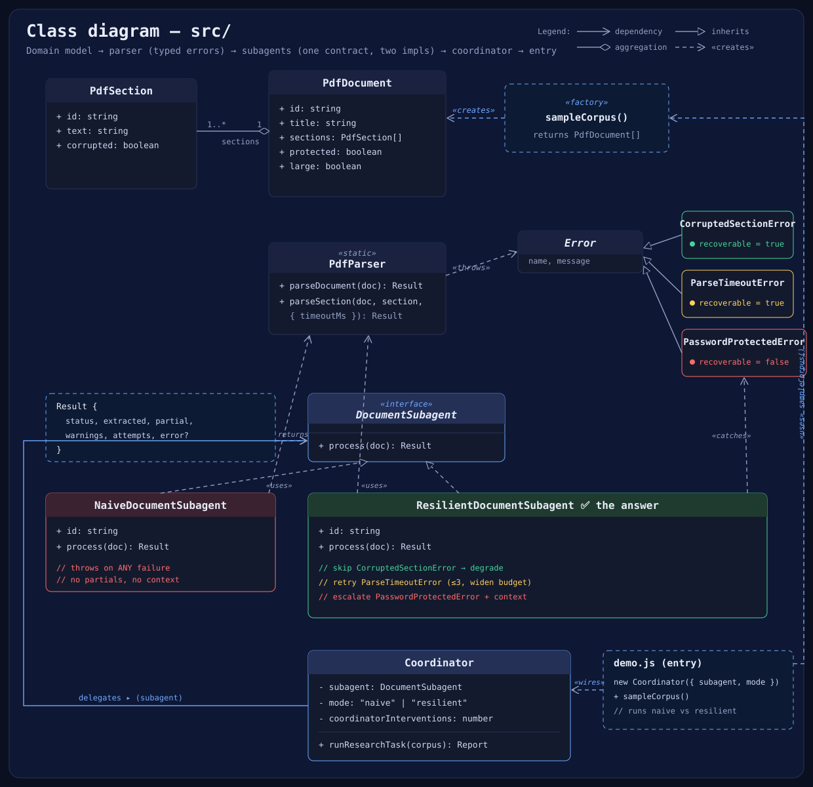
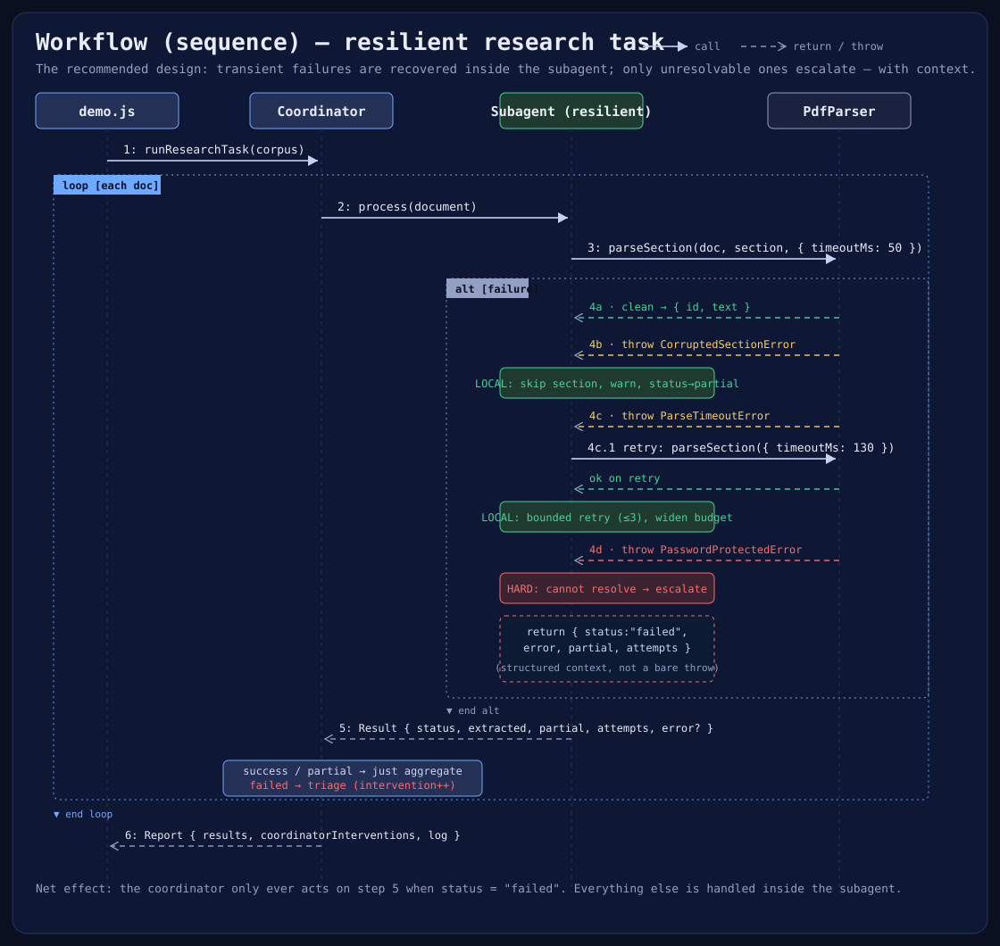

A document-analysis subagent keeps failing on corrupted PDFs, password-protected files, and parse timeouts — and every exception throws work back to the coordinator. Here's the fix, demonstrated live.
The document analysis subagent frequently encounters failures when processing PDF files — some have corrupted sections causing parsing exceptions, others are password-protected, and occasionally the parsing library times out on large files.
Currently, any exception immediately terminates the subagent and returns an error to the coordinator, which must decide whether to retry, skip the document, or fail the entire research task. This is causing excessive coordinator involvement in routine error handling.
Have the subagent implement local recovery for transient failures and only propagate errors it cannot resolve to the coordinator — including what was attempted and any partial results obtained.
Escalate every exception → Resolve transient issues locally · escalate only hard failures with context
A visual summary of the architectural improvement: subagents handle transient failures locally and escalate only the unresolvable ones — with context.

The same 4-document research task, run two ways. Watch the coordinator interventions counter — that's the metric for "how much routine work the coordinator is being forced to handle."
status: partial).
src/ fits togetherSix modules form a clean, acyclic chain: domain model → parser → subagent (one contract, two implementations) → coordinator → entry.

PdfSection + PdfDocument and the sampleCorpus() factory. Pure data — including the failure flags (corrupted, protected, large). No behaviour.
A stand-in PDF library. Its key design choice: it throws typed errors tagged with recoverable — that flag is the seam a smart caller branches on.
Calls the parser once with zero error handling. Any exception terminates it and bubbles up with no partials and no context — the exact problem the question describes.
Implements local recovery: skip+degrade on corrupted sections, bounded retry on timeouts, and escalates only the unresolvable password case — as a structured Result, not a bare throw.
Iterates the corpus and delegates each document to a subagent. Only reacts to status === "failed"; everything else is aggregated. Swappable subagents via the shared process() contract.
A one-liner sleep(ms) helper used to simulate parsing latency and timeouts.

{
status: "failed",
documentId: "doc-03",
extracted: [], // any sections salvaged before the failure
partial: [], // sections skipped or only partially parsed
attempts: [ … ], // audit trail of what was tried locally
error: {
type: "PasswordProtectedError",
recoverable: false, // coordinator may prompt user / fetch creds
attemptedLocally: [ "open" ]
}
}
Building these resilient, self-recovering subagents can be approached differently depending on the ecosystem you choose. Here is how they differentiate across the What, Why, and How stages.
Antigravity: A dedicated agentic coding platform with built-in primitives for subagent orchestration, workspace branching, and tool delegation.
Claude: A foundational LLM that can be wrapped in your own custom orchestration logic and tool-calling loops to act as an agent.
Antigravity excels at deep repository integration, managing the subagent lifecycle (spawn, kill, communicate) out-of-the-box. It's built for pair-programming and complex codebase tasks.
Claude is highly adaptable. While it requires building the coordinator yourself, it allows for completely custom execution environments and integrations outside of a standard IDE context.
define_subagent to create an agent profile with a specialized system prompt and toolset.invoke_subagent to launch instances concurrently, assigning specific roles (e.g., "Corpus Reader").send_message.